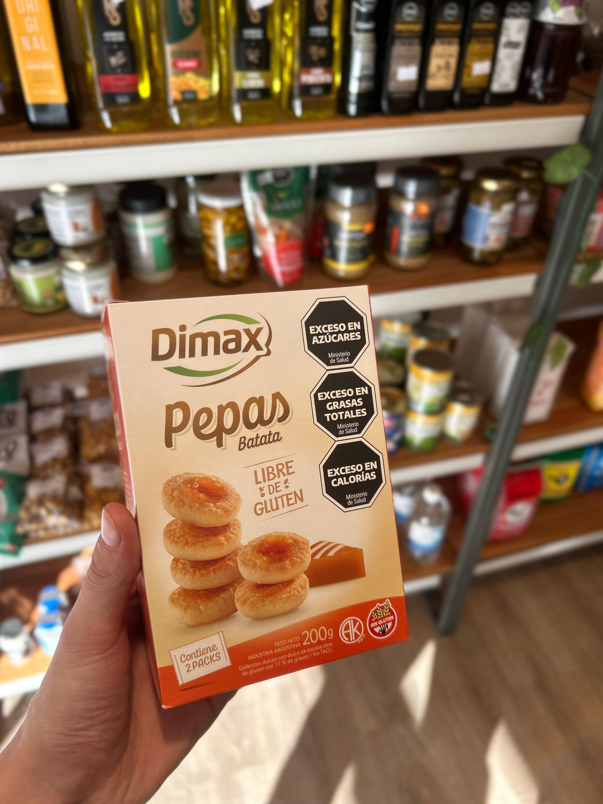
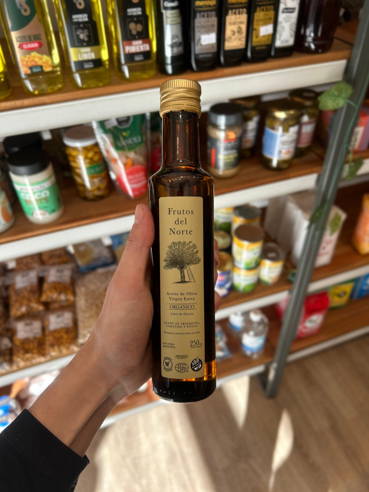
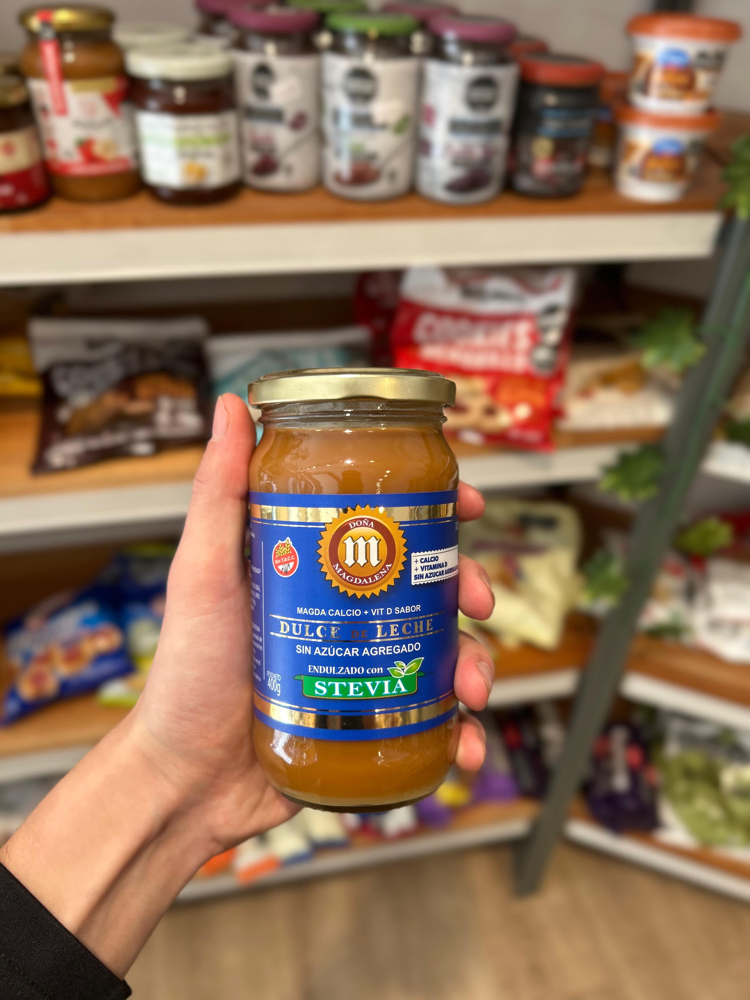

Granos y Cereales
Gran variedad de granos, semillas y cereales orgánicos de primera calidad.
Productos naturales, almacén orgánico y verdulería fresca.
Tu bienestar es nuestra prioridad.
Conocé la historia detrás de Sarambi
Sarambi nació con la misión de traer productos naturales y de calidad a nuestra comunidad. Con años de experiencia en el rubro, nos esforzamos por ofrecer lo mejor para tu mesa.
Somos más que una dietética: somos un lugar donde la calidad, el servicio y la calidez humana se encuentran.
🤝 Atención personalizada
💚 Compromiso con tu salud
📦 Selección cuidada

Selección de productos naturales para tu bienestar

Gran variedad de granos, semillas y cereales orgánicos de primera calidad.

Selección diaria de frutas y verduras frescas de productores locales.

Dulces, conservas, aceite de oliva, miel y más productos artesanales.
Te esperamos en nuestro local
Colón 1177 - Crdoba
Lunes a Viernes: 8:00 - 22:00
Sábados y Domingos: 10:00 - 22:00